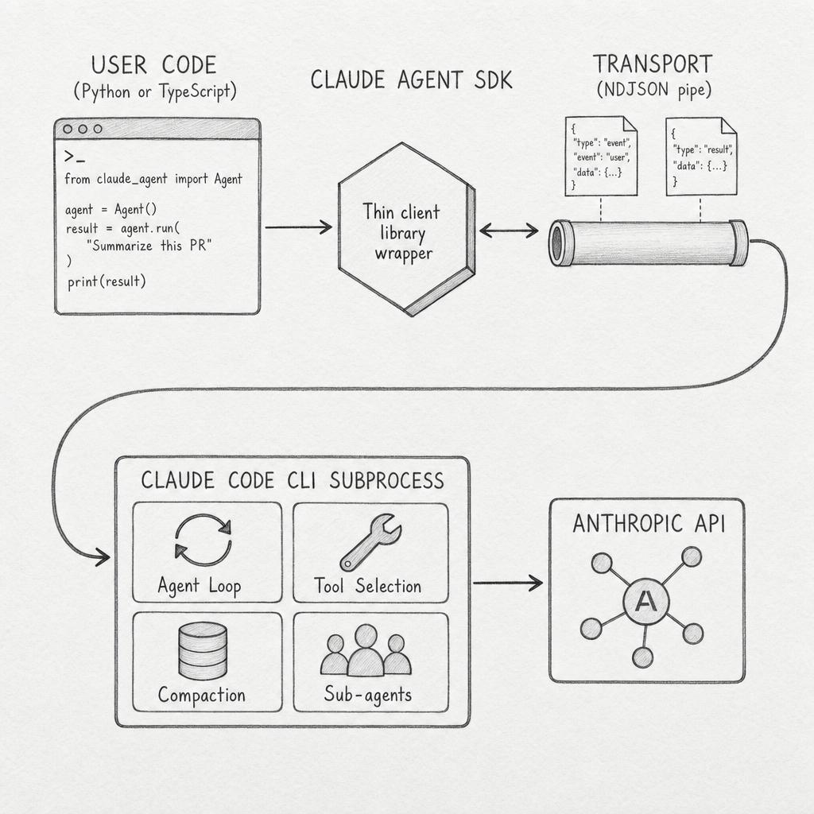
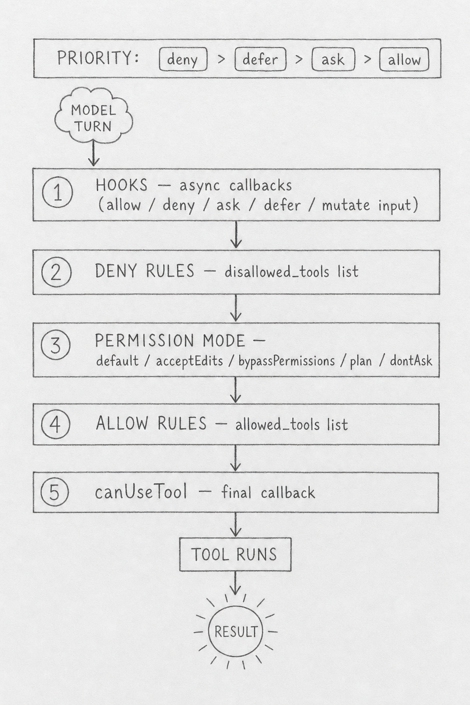
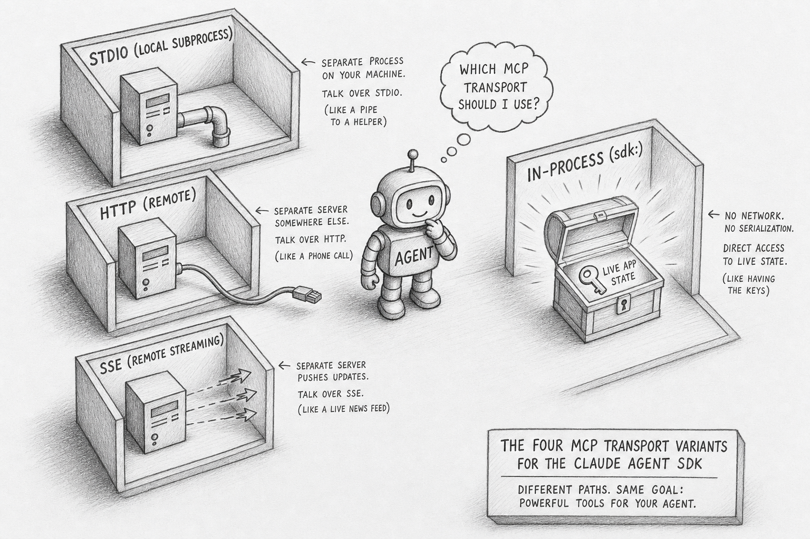
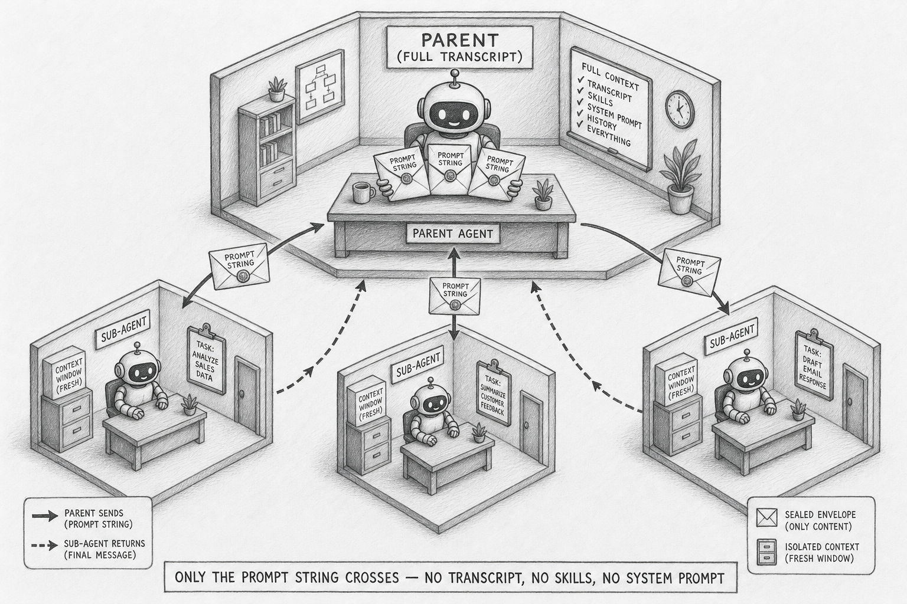
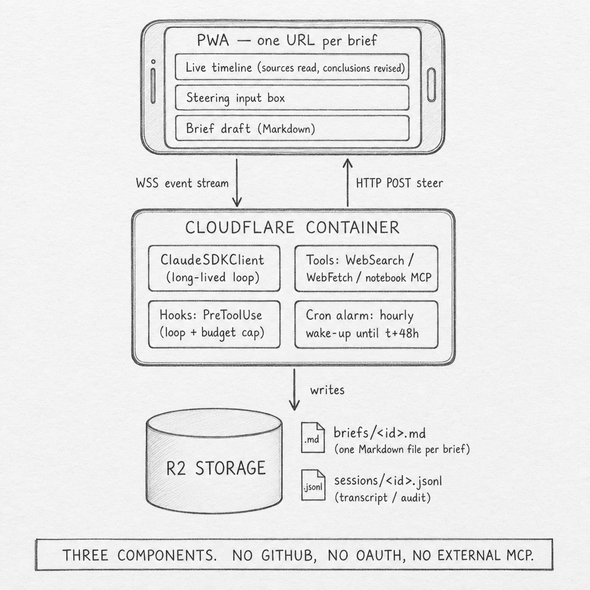

Inside the Claude Agent SDK
Inside the Claude Agent SDK
An LLM API answers questions. An agent pursues goals. The difference is a runtime — a process that decides which tool to call next, manages its own working memory across hundreds of turns, fans out sub-agents in isolated context windows, accepts human steering mid-loop, and persists every decision to disk for later resume.
The Claude Agent SDK is a programmable interface to that runtime. It ships in two packages — claude-agent-sdk for Python and @anthropic-ai/claude-agent-sdk for TypeScript — and exposes the same agent harness that powers Claude Code. Most posts about it cover what you can do with it. This one covers what it actually is and how each piece fits together.
The deepdive walks the agent loop at the center — where the model decides what to do next — and the five surfaces user code attaches to it: hooks, MCP servers, sub-agents, permission modes, and sessions. Each surface goes from entry point down to the on-disk format, then maps to a production decision. One section compares the SDK with n8n for workloads where autonomous reasoning is not worth its cost ceiling. The post ends with a worked demo: a long-running agent that is observable, steerable, and recoverable from a phone.
flowchart TD
H([" Thin Client "])
style H fill:#455a64,color:#fff,stroke:#90a4ae,stroke-width:3px,font-weight:bold,font-size:18px
Open src/claude_agent_sdk/query.py. The async iterator delegates to an InternalClient.process_query() that speaks newline-delimited JSON to a Transport abstraction. The default transport spawns a subprocess. That subprocess is the bundled Claude Code CLI binary — the same one developers run from a terminal. The model loop, tool selection, replanning, and context compaction all run inside the CLI process. User code is a transport peer.

The TS package bundles the CLI binary as an optional dependency so installation is one step. The Python package expects the CLI on the path and falls back to a CLINotFoundError if it is missing. Either way, the runtime topology is the same: a parent process holding your agent code, a child process holding the agent loop, and a JSON pipe between them. Almost every production capability the SDK markets — long-running sessions, sub-agents with isolated context, hooks that mutate tool I/O, runtime permission swaps — is implemented inside the subprocess. The library does not implement them; it routes messages to and from the program that does.
The two entry points expose the same subprocess differently. query() is a one-shot async iterator: prompt in, messages out until a ResultMessage. ClaudeSDKClient is a long-lived async with context manager with a control protocol — set_permission_mode, set_model, interrupt, rewind_files, reconnect_mcp_server, stop_task, get_context_usage. Streaming mode is the recommended default; one-shot mode lacks images, queueing, interrupts, and hooks. Holding this topology in mind makes the rest of the surfaces easier to read: each one is a way for user code to attach to the subprocess at a defined boundary.
flowchart TD
H([" Agent Loop "])
style H fill:#455a64,color:#fff,stroke:#90a4ae,stroke-width:3px,font-weight:bold,font-size:18px
Anthropic's framing of the loop is one line: gather context, take action, verify work, repeat. A turn is one model response that may emit zero or more ToolUseBlocks, followed by their ToolResultBlocks feeding into the next model call. The loop ends when the model emits a stop turn or hits max_turns or max_budget_usd. The Stop and SubagentStop hooks fire at the boundary.

This is the loop where the model's reasoning lives. Everything else in the SDK — hooks, MCP tools, sub-agents, permission modes, sessions — is a way for user code to attach to specific points in this cycle. The model decides what to gather, what to do, and when to stop. Anthropic's contribution is making the loop predictable enough that user code can hook into it without breaking it.
Every tool the model wants to call goes through a five-stage decision pipeline before execution. Hooks run first, then deny rules, then the active permission mode, then allow rules, then a final canUseTool callback. Conflict priority across stages is deny > defer > ask > allow. Deny rules hold even under bypassPermissions, which is the only durable safety net once that mode is on.

The decision pipeline is where the SDK's "control plane over a subprocess" becomes concrete. Each stage is a distinct surface for user code: hooks are async callbacks attached to events, deny and allow rules are static lists, the permission mode is a single string flipped at runtime, and canUseTool is a last-resort callback. They compose in a defined order with a defined priority. That predictability is what makes long-running autonomous agents tractable; without it, every Bash call would be a roll of the dice.
Two adjacent mechanisms manage the loop's working memory. Auto-compaction summarizes prior messages when the context limit approaches. The PreCompact hook fires before either auto or manual compaction, with a payload of {trigger: "manual" | "auto", custom_instructions?: str} so user code can archive the full transcript or inject summarization rules. ClaudeSDKClient.get_context_usage() exposes live usage so callers can pre-empt compaction rather than react to it.
flowchart TD
H([" MCP Tools "])
style H fill:#455a64,color:#fff,stroke:#90a4ae,stroke-width:3px,font-weight:bold,font-size:18px
The SDK ships a default tool preset matching Claude Code: Read, Write, Edit, Bash, Monitor, Glob, Grep, WebSearch, WebFetch, AskUserQuestion, and Agent. Custom tools come from MCP servers. The SDK supports four transport variants, and the fourth one is the architectural surprise.
Three of the variants are conventional. stdio runs an MCP server as a local subprocess and speaks JSON-RPC over the pipes. sse and http reach a remote MCP server over HTTP, with sse supporting streaming. Auth on remote transports is static headers: { Authorization: "Bearer <token>" } — the SDK does not perform OAuth flows, so any OAuth-gated MCP server requires your application to complete the flow and inject the token.
The fourth variant is sdk:. It runs your tool code as Python or TypeScript closures inside the same process as the SDK. No subprocess, no JSON-RPC, no network. You decorate a function with @tool(name, description, schema), register it via create_sdk_mcp_server(), and the agent now has a tool that can read your application's live state.

This is the killer differentiator for application-embedded agents. n8n's tools are static node definitions wired at design time. Most LLM frameworks expose tools through some message-passing layer. The SDK lets you hand the agent a closure that closes over your service's database connection, your auth context, your domain types. The closure has the same lifetime as your application and shares its memory. Tool naming convention is rigid — mcp__<server>__<tool> — and tool search is on by default to keep large MCP toolsets out of the context window.
flowchart TD
H([" Sub Agents "])
style H fill:#455a64,color:#fff,stroke:#90a4ae,stroke-width:3px,font-weight:bold,font-size:18px
Sub-agents are dispatched through the Agent tool — the same name as the entry tool, renamed from Task in CLI v2.1.63. The model decides at runtime when to spawn one. Each sub-agent runs in a fresh context window: it does not see the parent's transcript, the parent's system prompt, or the parent's skills. The only channel from parent to child is the prompt string passed in the tool call.
That isolation is a deliberate architectural choice, not an oversight. Sub-agents are how the SDK keeps long-running agents from drowning their own context. A research agent that needs to deep-read fifty documents spawns fifty sub-agents in sequence, each with its own context window, and only the final summary returns to the parent. Sub-agent transcripts persist in their own files on disk and survive parent compaction.

The contract is enforced. Sub-agents cannot recurse — they cannot invoke the Agent tool themselves. Their permission mode is inherited from the parent and cannot be overridden per sub-agent, which means a parent in bypassPermissions mode hands every child a loaded gun. AgentDefinition lets you specify a sub-agent's prompt, allowed tools, model tier, effort level, and whether it runs in the background. Definitions live either in code (recommended) or as files in .claude/agents/.
The pattern that makes sub-agents valuable is also the thing that makes them brittle. Because the only parent-to-child channel is the prompt string, the parent must serialize every relevant fact into it. There is no shared scratchpad, no inherited memory, no implicit context. Sub-agent design is API design — what does the parent need to tell the child, in plain text, every single time?
flowchart TD
H([" Hooks "])
style H fill:#455a64,color:#fff,stroke:#90a4ae,stroke-width:3px,font-weight:bold,font-size:18px
Hooks are the SDK's most powerful and least-discussed feature. The Python package exposes ten events: PreToolUse, PostToolUse, PostToolUseFailure, UserPromptSubmit, Stop, SubagentStop, PreCompact, Notification, SubagentStart, and PermissionRequest. The TypeScript package adds nine more for session lifecycle, teammate idle, task completion, config changes, and worktree operations.
Each hook is an async callback with a typed payload. PreToolUse receives {tool_name, tool_input, tool_use_id} and can return {decision: "allow" | "deny" | "ask" | "defer", updatedInput?}. The output updatedInput mutates what the model "asked for" before the tool runs. PostToolUse can return additionalContext (appended to the tool result the model sees) or updatedToolOutput (replaces it). The model's view of its own tool call can be different from what actually happened, by design.
This is what enables real production patterns. A PreToolUse hook on Bash can scrub secrets before execution. A PostToolUse hook on a database read can redact PII before the model sees the result. A PreCompact hook can persist the full transcript to durable storage before compaction destroys it. None of these patterns are libraries you import; they are five-line async functions you attach to event matchers, with regex matching against the event's filter field.
Hooks register via HookMatcher(matcher="Write|Edit", hooks=[callback], timeout=60). Multiple matchers under one event run in array order. For high-volume telemetry hooks that should not block the agent, the output supports {async_: True, asyncTimeout: 30000} for fire-and-forget — the agent proceeds without waiting and the hook cannot mutate I/O.
flowchart TD
H([" Permissions "])
style H fill:#455a64,color:#fff,stroke:#90a4ae,stroke-width:3px,font-weight:bold,font-size:18px
Six permission modes (five in Python, plus auto in TypeScript). Each is a string and each gates a stage of the decision pipeline.
| Mode | Behavior |
|---|---|
default |
No auto-approvals; unmatched tools fall through to canUseTool |
acceptEdits |
Auto-approves file edits and filesystem Bash calls inside cwd / additional dirs. Does not auto-approve MCP tools |
bypassPermissions |
Approves everything; deny rules and hooks still run. allowed_tools does not constrain it — listed tools are not a whitelist here |
plan |
Pure analysis mode; no tool execution. AskUserQuestion still works |
dontAsk |
Anything not pre-approved is denied. canUseTool is never called |
auto (TS only) |
Model classifier approves or denies each tool call |
The footgun is bypassPermissions. Many users assume allowed_tools constrains it. It does not. A parent agent in bypassPermissions hands every sub-agent the same mode without override. Production deployments should treat bypassPermissions as a deliberate choice for trusted, observable, ephemeral runs only.
What makes the modes powerful is that they are not set-once. client.set_permission_mode("acceptEdits") flips the active mode mid-session. The SDK's trust boundary is a runtime control plane, not a design-time switch. An agent can start in plan mode for analysis, switch to acceptEdits when the user approves the plan, and never touch bypassPermissions at all.
flowchart TD
H([" Sessions "])
style H fill:#455a64,color:#fff,stroke:#90a4ae,stroke-width:3px,font-weight:bold,font-size:18px
A session is not a single JSONL file. Open ~/.claude/projects/<encoded-cwd>/<session-id>.jsonl on any host running the SDK and you find a directory tree:
<encoded-cwd>/
├── <session-id>.jsonl # main transcript
└── <session-id>/
├── subagents/
│ ├── agent-<id>.jsonl # each sub-agent persists independently
│ └── agent-<id>.meta.json
└── tool-results/
└── <tool_use_id>.txt # spillover for large tool outputs
Eight record types appear in real sessions: user, assistant, system, attachment, file-history-snapshot, permission-mode, last-prompt, ai-title. Each carries a uuid and a parentUuid, forming a DAG rather than a linear log. Records emitted from inside a sub-agent are flagged isSidechain: true. The parallel subagents/ directory is what makes sub-agent transcripts survive parent compaction — they are not embedded in the parent stream.
Three resume modes are supported. continue_conversation=True resumes the most recent session in the working directory. resume=<session_id> resumes a specific session by ID. fork_session=True creates a new session that branches from a copy of the original's history. ClaudeSDKClient exposes list_sessions, get_session_messages, rename_session, tag_session, and delete_session for managing the on-disk store. A pluggable SessionStore adapter mirrors transcripts to S3, R2, Redis, or any backing store, which is how cross-host resume and Anthropic Managed Agents work.
The on-disk format does work that user code does not have to. Every assistant turn records a usage block with cache_creation_input_tokens, cache_read_input_tokens, and an ephemeral_5m_input_tokens versus ephemeral_1h_input_tokens split. Exact prompt-cache hit rate and per-turn cost are reconstructible from a JSONL alone, no external observability tool required. Real session sizes range from under five kilobytes for one-shots to nearly eight megabytes for multi-day runs.
flowchart TD
H([" n8n Compared "])
style H fill:#455a64,color:#fff,stroke:#90a4ae,stroke-width:3px,font-weight:bold,font-size:18px
n8n is the obvious comparison because n8n 2.0 (January 2026) ships a native LangChain AI Agent node. The naive framing — "agents versus workflows" — is a strawman. n8n can run autonomous tool-calling loops. The honest distinction is structural.
n8n runs autonomous tool-call loops within one workflow execution. The Agent SDK runs them open-ended across event boundaries. Issue arrives Tuesday, test fails Wednesday, fix lands Thursday — same agent, same accumulating context, same goal.

n8n is a deterministic node-DAG runtime that embeds an agent as one node type. The agent's loop runs inside the AI Agent node and returns a single output item to the next graph edge. Branching, looping, and error handling are static edges authored on the canvas. The unit of progress is an item in the array passed between nodes. The unit of state is an execution row in Postgres. Memory across runs requires a Memory sub-node; without one, every run starts blank.
The Agent SDK is the inverse. The agent is the runtime. Sessions persist across executions, the model decides what tool to call next, sub-agents fan out with isolated context, the permission mode hot-swaps mid-session, and hooks mutate tool I/O between model and execution. Five capabilities have no clean n8n analog: in-process MCP servers with closures over live state, dynamically-dispatched sub-agents with isolated context windows, hook chains that rewrite tool input and output, PreCompact plus get_context_usage() exposing the model's working memory, and runtime permission mode swaps.
When does each win? Deterministic ETL, webhook fan-out, customer support triage with stable routing, and citizen-dev no-code automation all favor n8n. Open-ended research, code review, SRE alert triage with judgment, voice or chat agents with persistent memory, and long-running autonomous monitoring all favor the SDK. A common production shape is hybrid: n8n owns the orchestration spine and stable integrations, an SDK-backed service handles the slice that needs reasoning across event boundaries.
flowchart TD
H([" The Demo "])
style H fill:#455a64,color:#fff,stroke:#90a4ae,stroke-width:3px,font-weight:bold,font-size:18px
The unique example is the Weekend Researcher — tell your AI a question Friday, read its researched answer Monday.
You have a question you've been meaning to think hard about. Is Postgres or DuckDB the right backend for my analytics side project? What changed in Rust async between 2023 and 2026? Why does my flaky test only fail on Tuesdays? But you never have a clear weekend to dig in. You open a single web page, type the question, tap submit. For the next 48 hours an agent runs in the cloud reading sources, running small experiments, and revising a draft brief in real time. You can watch its progress on your phone — what it's reading, what it concluded, what surprised it. You can steer at any moment.

.md and sessions/The whole system is three components. A public progressive web app, one URL per brief, that shows the live timeline of sources read and conclusions revised, plus a steering input box, plus the evolving Markdown brief. A Cloudflare Container holding one long-lived ClaudeSDKClient per active brief — sleeps between hourly cron-alarm wake-ups so the cost ceiling is bounded. R2 storage holding one Markdown file per brief and one JSONL per session. No GitHub. No OAuth. No external MCP servers. The agent's tools are WebSearch, WebFetch, and a ten-line in-process notebook MCP for reading and writing the brief.
The flow is what makes the demo agentic rather than scripted. Friday 8 pm: you type the question, the agent posts an outline of what it doesn't know and the first sources it queued. Friday-to-Sunday, every hour: cron fires, the agent does about thirty minutes of work, reads two to four sources, sometimes runs a small experiment, revises the brief, sleeps. Saturday 9 am: you open the PWA over coffee, see fourteen sources read and a contradiction the agent flagged. You type into the steering box, I care about operational simplicity, not query speed. The agent's next wake-up reads the steering message as a typed SDKUserMessage and re-prioritizes — drops two queued benchmark articles, queues two ops-focused ones. The brief's framing shifts. Sunday 7 pm: the agent freezes the brief, sends a notification. Monday 7:30 am: you read 1,500 words on your phone over breakfast.
![Hand-drawn pencil schematic of the Weekend Researcher timeline. A horizontal timeline with five pinned moments left to right: Friday 8pm question entered, Friday 8:01pm agent starts with outline of unknowns, Saturday 9am steering message changes the reading queue mid-loop, Sunday 7pm freeze and final pass, Monday 7:30am developer reads the 1,500-word brief on phone. Below the line, hourly cron wake-ups marked with clock icons and a memory-growing notebook progression. Above the line between Saturday and Sunday, a label reads](images/weekend-researcher-timeline-schematic.png)
Saturday's surprise changing Sunday's conclusion is the deep meaning of "agentic." It is something every reader has experienced themselves while researching — but this version is delegated. The agent holds the working theory across forty-eight hours of evidence, accepts human steering at any moment, and produces one coherent artifact at the end.
What makes this unreachable in n8n is not any single feature. It is the runtime shape. n8n's AI Agent node runs its loop inside one workflow execution and returns a single output item. There is no surface to inject a new user message into a running loop. The cancel-and-restart pattern that approximates steering loses the in-flight reasoning context. Continuous reasoning across triggers does not exist in a node-DAG runtime where every execution starts blank.
The transferable principle is what an agentic system actually requires: persistent state, runtime control plane, tool-use telemetry, human-in-the-loop steering at any moment, fork-and-resume of session history. Any agent runtime that ships fewer than these primitives is reasoning-by-script wearing a hat.
flowchart TD
H([" Inside OpenClaw "])
style H fill:#455a64,color:#fff,stroke:#90a4ae,stroke-width:3px,font-weight:bold,font-size:18px
The Weekend Researcher is one shape — build your own harness around the SDK. The other shape is to plug into a harness that already exists. The most concrete production example sits inside OpenClaw, an open-source agent framework that has shipped a Gateway daemon, a per-session execution lane, and a plugin SDK since November 2025. As of v2026.5.2 (367,955 GitHub stars), OpenClaw treats the inference loop as one slot in a larger system and accepts five candidate backends through a single configuration knob: PI (the default, built on pi-ai), claude-cli, google-gemini-cli, codex-cli, and codex (native).
![Hand-drawn pencil schematic of how the Claude Agent SDK plugs into OpenClaw. The left side shows the OpenClaw harness as a large box containing six components: Gateway daemon, 24 channel adapters, Plugin SDK with lifecycle hooks, Memory and dreaming, Cron and heartbeat scheduler, Auth registry. A central agentRuntime slot connects to five engine boxes on the right: PI default, claude-cli (highlighted as the Claude Agent SDK with sub-labels Agent loop, Hooks, MCP tools, Sub-agents, Sessions, Permissions), google-gemini-cli, codex-cli, and codex native. A callout from claude-cli labeled](images/openclaw-integration-schematic.png)
The claude-cli agentRuntime is the SDK in production. OpenClaw provides the daemon shell, the channel adapters, the cron scheduler, the auth registry, the multi-account binding, the memory plugins, the diagnostics. The SDK provides the agent loop and the five attachment surfaces this post just walked. They compose. For the 95% of teams who want OpenClaw's surface with Claude as the engine, the integration is a configuration line, not a build.
The transferable principle: agent harnesses and inference engines are separable concerns, and harness-with-pluggable-engine is the durable answer for any agent system that wants to outlive its current preferred vendor. January 9, 2026's OAuth lockdown was the existence proof. OpenClaw's response — provider diversification, token sink, read-through inheritance, five interchangeable agentRuntime backends — is the case study. The SDK alone does not give you that protection; the SDK inside a harness does.
flowchart TD
H([" The Wire "])
style H fill:#455a64,color:#fff,stroke:#90a4ae,stroke-width:3px,font-weight:bold,font-size:18px
The Claude Agent SDK is a control plane over a separate program. Once you see it that way, the rest of the surface — hooks, sub-agents, MCP transports, permission modes, the on-disk session tree — stops being API trivia and starts being the answer to a different question: how do you keep a long-running autonomous process observable, steerable, and recoverable from outside its own loop? The Messages API lets you ask a model a question. The Agent SDK lets you put a program in charge of a goal and watch what it does about it. The library is not the agent — the library is the wire.
References
- Anthropic. "Claude Agent SDK Overview." code.claude.com/docs/en/agent-sdk/overview.
- Anthropic. "Claude Agent SDK Hooks." code.claude.com/docs/en/agent-sdk/hooks.
- Anthropic. "Claude Agent SDK Permissions." code.claude.com/docs/en/agent-sdk/permissions.
- Anthropic. "Claude Agent SDK Sub-agents." code.claude.com/docs/en/agent-sdk/subagents.
- Anthropic. "Claude Agent SDK MCP Integration." code.claude.com/docs/en/agent-sdk/mcp.
- Anthropic. "Claude Agent SDK Sessions." code.claude.com/docs/en/agent-sdk/sessions.
- Anthropic. "Hosting the Agent SDK." code.claude.com/docs/en/agent-sdk/hosting.
- Anthropic Engineering. "Building Agents with the Claude Agent SDK." claude.com/blog/building-agents-with-the-claude-agent-sdk.
- GitHub. "claude-agent-sdk-python." github.com/anthropics/claude-agent-sdk-python.
- GitHub. "claude-agent-sdk-typescript." github.com/anthropics/claude-agent-sdk-typescript.
- n8n. "AI Agent Cluster Node Documentation." docs.n8n.io/integrations/builtin/cluster-nodes/root-nodes/n8n-nodes-langchain.agent.
- n8n. "Queue Mode." docs.n8n.io/hosting/scaling/queue-mode.